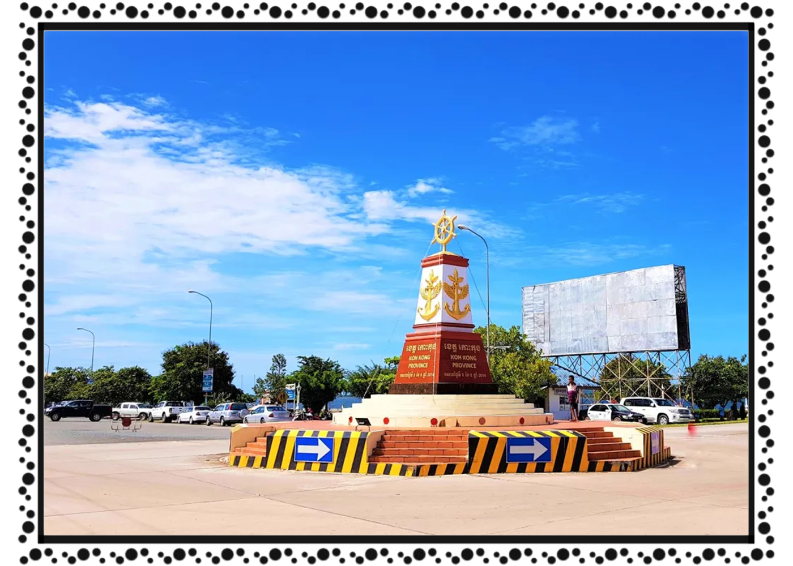

ខេត្ត និងក្រុងនៃព្រះរាជាណាចក្រកម្ពុជា
ភ្កោះកុង
 កោះកុង គឺជាខេត្តមួយស្ថិតនៅភាគនិរតីនៃប្រទេសកម្ពុជា។ ទីរួមខេត្តគឺក្រុងខេមរភូមិន្ទ។ខេត្តនេះដែលមានក្រុងខេមរភូមិន្ទជាទីរួមខេត្តស្ថិតនៅភាគនិរតីនៃប្រទេសកម្ពុជា។ ខេត្តកោះកុងមានព្រំប្រទល់ ខាងជើងជាប់នឹងខេត្តពោធិ៍សាត់ ខាងកើតជាប់នឹងខេត្តកំពង់ស្ពឺ កំពត និង ព្រះសីហនុ ខាងត្បូងនិងខាងលិចជាប់នឹងឈូងសមុទ្រថៃ និងមួយផែ្នកនៃចង្វាតត្រាច(ខេត្តត្រាច)ប្រទេសថៃ។ មុនសម័យអាណានិគមបារាំង ចង្វាតបច្ចន្តគិរីខែត្រ (សៀម៖ ปัจจันตคิรีเขตร) អតីតកាលនៃក្រុងកោះកុង ឬខេមរភូមិន្ទ សៀមបានរឹបអូសមកធ្វើជារបស់ខ្លួនក្នុងសម័យរជ្ជកាលទី៥ ហើយដែលជាខេត្តត្រជាប់ប្រទល់ដែនសមុទ្រ មានភាពសំខាន់ដូចគ្នានឹងចង្វាតចន្ទបុរី និងចង្វាតត្រាចពីអតីតផងដែរ។ បច្ចុប្បន្នមានទីតាំងស្ថិតនៅក្នុងក្រុងខេមរភូមិមន្ទ នៃខេត្តកោះកុងរបស់ប្រទេសកម្ពុជា។ ដែនដីខេត្តនេះត្រូវបានធ្លាក់មកជារបស់បារាំង ព្រមជាមួយនឹងផ្នែកខាងស្ដាំទន្លេមេគង្គ គឺខ្វែងជយបុរី និងខ្វែងចម្ប៉ាសក្ដិ កាលគ.ស.១៩០៤។ តាំងពីដើមមក កោះកុងគឺជាខេត្តមួយរបស់រាជអាណាចក្រខ្មែរ តែរហូតមកដល់សម័យដែលខ្មែរស្ថិតនៅក្រោមការត្រួតត្រារបស់សៀម ព្រះចៅក្រុងសៀមក៏ព្រះបរមរាជឱង្ការឲ្យតាំងកោះកុងជាផ្នែកមួយរបស់ក្រុងត្រាច។ នៅគ.ស.១៨៥៥ ព្រះបាទសម្ដេចព្រះចមក្លៅចៅយូហួបានមានព្រះបរមរាជឱង្ការឲ្យតាំងកោះកុង ដោយព្រះរាជទាននាមក្រុងនេះថា ក្រុងបច្ចន្តគិរីខែត្រដើម្បីឲ្យក្លាយជាក្រុងជាប់សមុទ្ទផ្នែកខាងកើតរបស់សៀមដោយសារជាក្រុងដែលមានផ្ទៃដីជាប់នឹងប្រទេសកម្ពុជា និងប្រទេសវៀតណាម។ ហេតុដែលរជ្ជកាលទី៤ (ព្រះបាទសម្ដេចព្រះចមក្លៅចៅយូហួ) ព្រះរាជទានកោះកុងថា បច្ចន្តគិរីខែត្រក៏គឺដើម្បីឲ្យជួននឹងក្រុងប្រជួបគីរីខ័ន្ធដែលស្ថិតនៅភាគខាងលិចរបស់ថៃ ហើយដែលក្រុងទាំងពីរនេះស្ថិតនៅក្នុងរយៈទទឹងដូចគ្នា។ មកដល់គ.ស.១៨៧៩ ព្រះបាទសម្ដេចព្រះចមក្លៅចៅយូហួ ទ្រង់ព្រះករុណាព្រះរាជានុញ្ញាតឲ្យព្រះអង្គម្ចាស់សាយសនិទវង្ស ចាត់តាំងស្ថានីយទាហានជាយដែនសមុទ្ទភាគខាងកើត ឯក្រុងជលបុរី បាងព្រះ ស្រុកបាងលៈមុង ក្រុងរៈយ៉ង ក្រុងក្លែង ក្រុងចន្ទបុរី ស្រុកខ្លុង ក្រុងត្រាច ក្រុងបច្ចន្តគិរីខែត្រ និងកោះសមេតក្រៅ ដើម្បីតទល់នឹងបារាំងតាមដែនសមុទ្ទ។ តមកនៅ គ.ស.១៨៩២ បារាំងចាប់ផ្ដើមប្រើទាហាន បង្ខំថៃដោយលើកកងទ័ពមកដេញទាហានថៃឲ្យចេញពីដែនដីផ្នែកខាងឆ្វេងនៃទន្លេមេគង្គ ដែលជាហេតុបណ្ដាលឲ្យជាយដែនថៃមានបញ្ហាទ្វេឡើង ហេតុដូចនេះព្រះអង្គក៏ព្រះរាជានុញ្ញាត តែងតាំងកម្មការប្រឹក្សាការពារព្រះរាជអាណាខែត្រឡើង និងចាត់កងបញ្ជាការទ័ពតាមក្រុងដែនសមុទ្ទឡើង។ នៅគ.ស.១៨៩៣ រាជការសៀមបានតែងតាំងឲ្យនាយពលនាវាចត្វា ពញាជលយុទ្ធយោធិន្ទ្រ (André du Plésis de Richelieu) ជាអ្នកចាត់ការការពារព្រះរាជអាណាខែត្រភាគខាងកើត។ ខាងក្រសួងការបរទេសក៏មានបញ្ជាមកចៅហ្វាយខែត្រនៅតំបន់នេះដោយរួមទាំងក្រុងបច្ចន្តគិរីខែត្រផង ឲ្យជួយពញាជលយុទ្ធយោធិន្ទ្រចាត់ការគ្រប់យ៉ាងដែលទាក់ទងនឹងការការពារព្រះរាជអាណាខែត្រ។